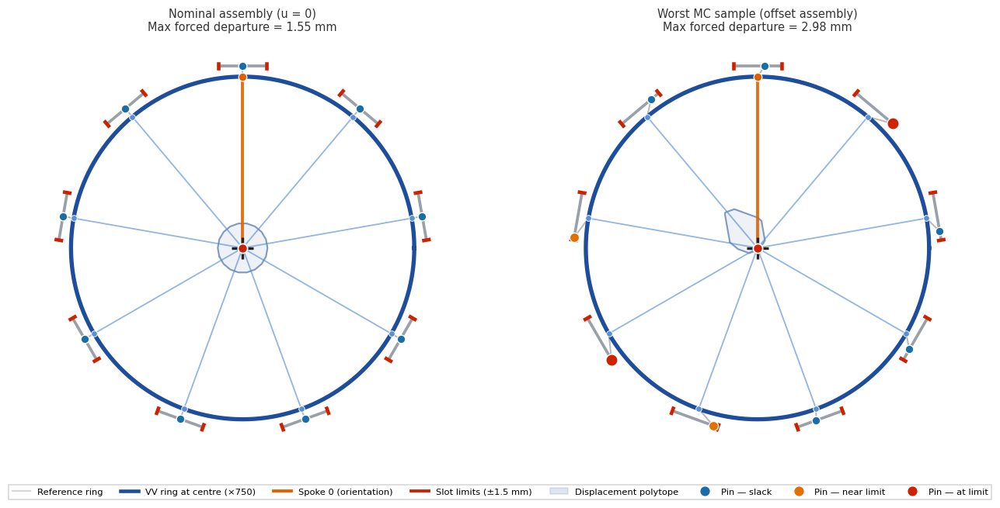
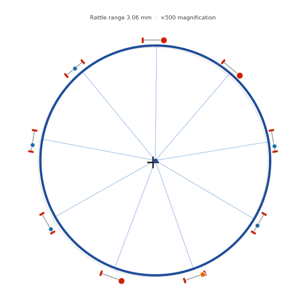
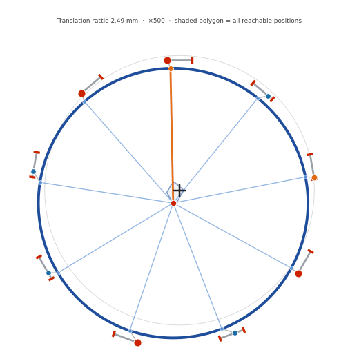
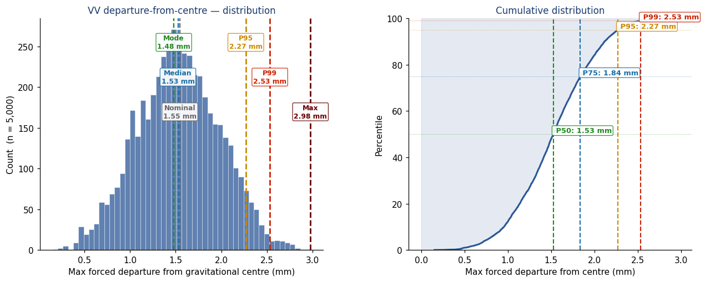
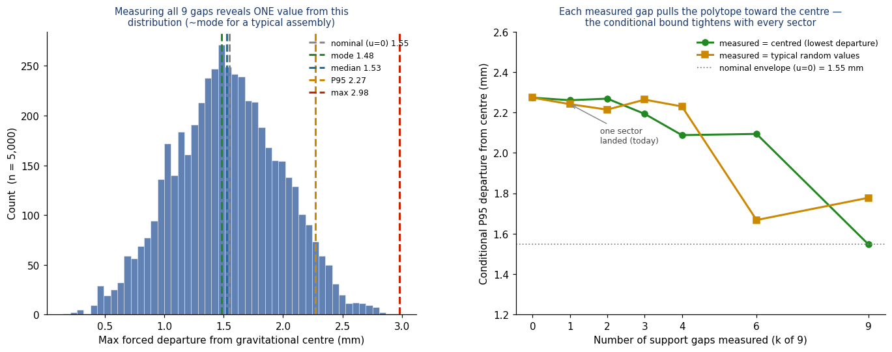

· 2026-05-28
5,000-sample Monte Carlo · scipy HiGHS LP · 3-DOF rigid-body model · metric: max lateral displacement of the VV centre from the gravitational centre (n = 1 first-wall shift)
The vacuum vessel rests on nine gravity supports (VVGS) equally spaced toroidally beneath the lower ports, on a ring of radius Rs ≈ 8 m. Each VVGS is a dual-hinge mechanism inclined at 15° from vertical, leaning inward toward the machine axis. Radial motion of the vessel is permitted by rotation of the dowels (this accommodates the thermal expansion between assembly and operation/baking); toroidal and vertical motion are restrained by the dowels' rigidity. The toroidal restraint is a ±1.5 mm (3 mm total) dowel slot, confirmed against the GS design.
| Parameter | Value | Note |
|---|---|---|
| Number of supports | 9 | Equally spaced toroidally |
| Support ring radius Rs | 8 m | |
| Toroidal slot per support | ±1.5 mm (3 mm total) | Confirmed against GS design |
| Hinge inclination from vertical | 15° | Inward (centring) |
| Supported mass M | ≈ 8000 t | VV + in-vessel components |
The ±1.5 mm toroidal slot is an assembly tolerance: it is the as-built precision with which each VVGS pin can be placed in its dowel. The pin can land anywhere inside this 3 mm gap and there is no design feature that pre-positions it. If the gaps are left unshimmed — the case treated throughout this report — it is precisely this tolerance that permits the vessel to be laterally mobile, and is what drives this analysis. We model the as-built state with the conservative prior that each support's offset ui is independent across supports and uniformly distributed on [−1.5 mm, +1.5 mm]. This iid uniform prior is the Monte Carlo basis of §5. (Shimming a support pins its ui to a measured value and removes that support's contribution to the mobility — see §6.)
The inward 15° inclination is deliberate. The nine support axes converge above the vessel centre of gravity; for the lateral (n = 1) mode the vessel therefore behaves as if suspended from that convergence point — an inclined-hinge gravitational pendulum — and the lateral plane has a parabolic potential well centred on the nominal position. The effective pendulum length is Leff ≈ Rs/tan(15°) − zCoG ≈ 26 m (sensitive to angle: ~2 m per degree). The lateral restoring stiffness is K = W/Leff:
| Quantity | Value |
|---|---|
| Lateral centring stiffness | K ≈ 3.0 kN / mm |
| Natural period | Tn ≈ 10 s (f ≈ 0.1 Hz) |
| Force to push the vessel to a ±1.5 mm stop | Fstop ≈ 4.5 kN |
| Rest position with no lateral force | q* = 0 (centred) |
For a rigid-body lateral displacement q = [Δx, Δy, Δθ], the toroidal slide at support i is
δᵢ = −sin(φᵢ)·Δx + cos(φᵢ)·Δy + R·Δθ ≡ A[i, :] · q , |uᵢ + δᵢ| ≤ 1.5 mm for all i,
with φi = π/2 − 2πi/9 and R = 8 m. The 9×3 constraint matrix satisfies AᵀA = diag(4.5, 4.5, 576): the three rigid-body DOFs are mutually uncorrelated. The set of reachable VV-centre positions in (Δx, Δy) — with Δθ optimised — is the displacement polytope for a given assembly state u. The metric of this report is the maximum lateral displacement of the VV centre from the gravitational centre q = 0, computed as the maximum norm over the polytope by 72-direction LP sweep.
The vessel is drawn at the gravitational centre in both panels (its rest position). The shaded polygon around the centre is the displacement polytope — the set of lateral positions the centre can reach under an applied force. Displacements are magnified ×750.

The animations sweep the VV centre through the polytope along its principal axis — the kinematic envelope of possible lateral motion about the centred rest position. The vessel sits at the centre under no force; sufficient applied force drives it through the envelope.


Five thousand assemblies, with each support's offset drawn independently from
Uniform(−1.5 mm, +1.5 mm). For each assembly the maximum lateral displacement of the VV
centre from the gravitational centre is computed (72-direction LP). Reproducibly generated by
vv_mc_generator.py with fixed seed 20260527.

| Statistic | Max lateral displacement (mm) |
|---|---|
| Nominal (u = 0) — symmetric envelope half-width | 1.55 |
| Mode | 1.49 |
| Median (P50) | 1.53 |
| P90 | 2.12 |
| P95 | 2.27 |
| P99 | 2.53 |
| Max observed (n = 5000) | 2.98 |
Each measured gap fixes one ui to its true value. Because the polytope's offset from the gravitational centre is governed by the assembly offsets, every measured gap directly tightens the conditional displacement bound: each measurement pulls the polytope toward the centre. With all 9 measured and found near-centred, the conditional maximum displacement collapses to the 1.55 mm nominal envelope.

| Measured sectors (k of 9) | Conditional P95 — centred (mm) | Conditional P95 — typical (mm) |
|---|---|---|
| 0 (baseline) | 2.27 | 2.27 |
| 1 | ≈ 2.26 | ≈ 2.26 |
| 3 | ≈ 2.19 | ≈ 2.22 |
| 5 | ≈ 2.05 | ≈ 2.0 |
| 9 (all) | → 1.55 (nominal env.) | deterministic |
During plasma current ramp-up (0 → ~3 MA over ~10 s), the time-changing plasma current induces image currents in the vessel. These currents interact with the toroidal-field asymmetry produced by TF vault closure tolerances (a long-wavelength n ≤ 4 perturbation) to produce a lateral n = 1 force on the vessel.
Order-of-magnitude: with vessel image current of O(105 A) during the ramp, BT ≈ 5 T, fractional n = 1 field error ε ~ 10−4–10−3, and a toroidal length scale ~ 2πR, the lateral force Framp ~ ε · Ivv · BT · L is of order 1–10 kN — comparable to the Fstop ≈ 4.5 kN centring threshold. The ramp duration (10 s) is comparable to the pendulum natural period (Tn ≈ 10 s), so the dynamic response factor for a single (non-periodic) ramp is ~1.3–1.5; the quasi-static deflection F/K = 0.3–3 mm becomes a peak transient excursion of order 1–4 mm. Combined with the favourable direction above, a defensible peak start-up wall–field n = 1 mismatch from this source is below the kinematic ceiling — a detailed EM transient is required to pin the precise value.
A current quench delivers an MN-scale lateral impulse to the vessel over ~10 ms — far faster than the 10 s vessel pendulum period and far larger than the kN-scale centring force. On this timescale the vessel responds essentially as a free mass:
impulse J = ∫F dt ~ (10 MN)·(10 ms) ≈ 10⁵ N·s velocity v = J / M ~ 10⁵ / 8×10⁶ kg ≈ 12 mm/s amplitude (free) A = v / ω ~ v·Tn / 2π ≈ 20 mm (≫ 1.5 mm gap)
The start-up heat-load criterion limits the peak-to-peak difference between the n ≤ 4 filtered first-wall profile and the n ≤ 4 filtered toroidal-field profile to ≤ 6 mm. The VV n = 1 lateral displacement, quantified in §5, is one contributor to the first-wall side of this inequality:
| Operating condition | VV n = 1 contribution to the 6 mm budget |
|---|---|
| Quiescent / between shots (no lateral load) | ≈ 0 mm (self-centred) |
| Start-up ramp (passive currents → wall follows TF) | net reduces mismatch |
| Steady asymmetric thermal/EM loads | F/K — sub-mm |
| Disruption transient (forced) | up to gap (1.5 mm) + dynamic overshoot |
| Kinematic ceiling (worst random assembly, fully forced) | ≈ 2.98 mm |
Author: . Monte Carlo data generated reproducibly
by vv_mc_generator.py (scipy HiGHS LP, max-departure-from-centre metric,
N = 5000, fixed seed 20260527 → committed data/). Figures and animations by
vv_viz.py; displacements magnified ×750 in diagrams. Centring parameters:
M ≈ 8000 t, 15° inclined dual hinge → Leff ≈ 26 m → K ≈ 3 kN/mm, Tn ≈
10 s, Fstop ≈ 4.5 kN. Every number regenerates from the repository.
Source: Simon-McIntosh/vv.